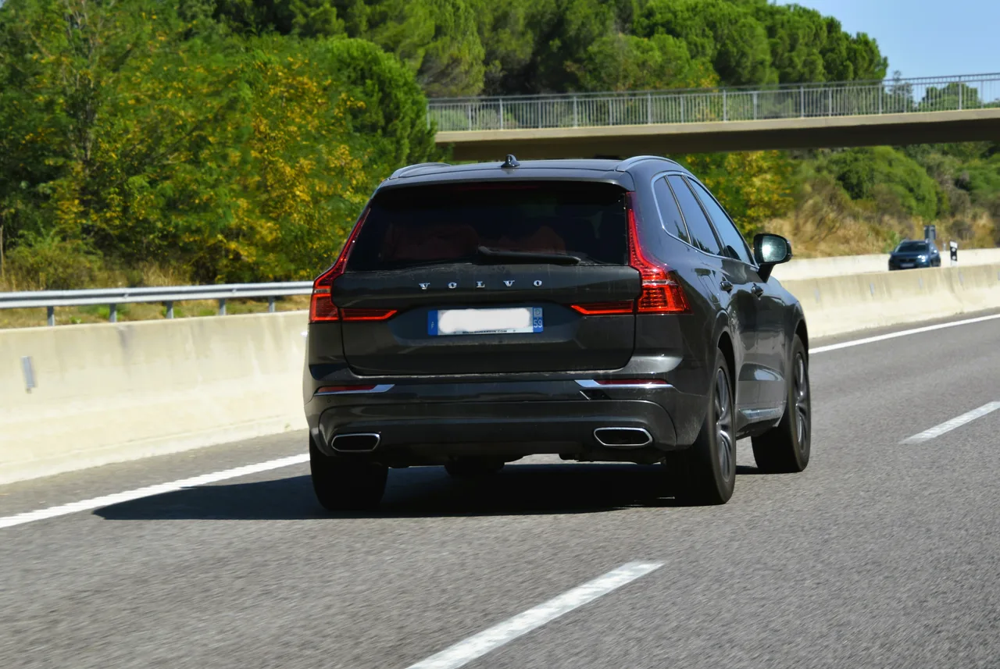
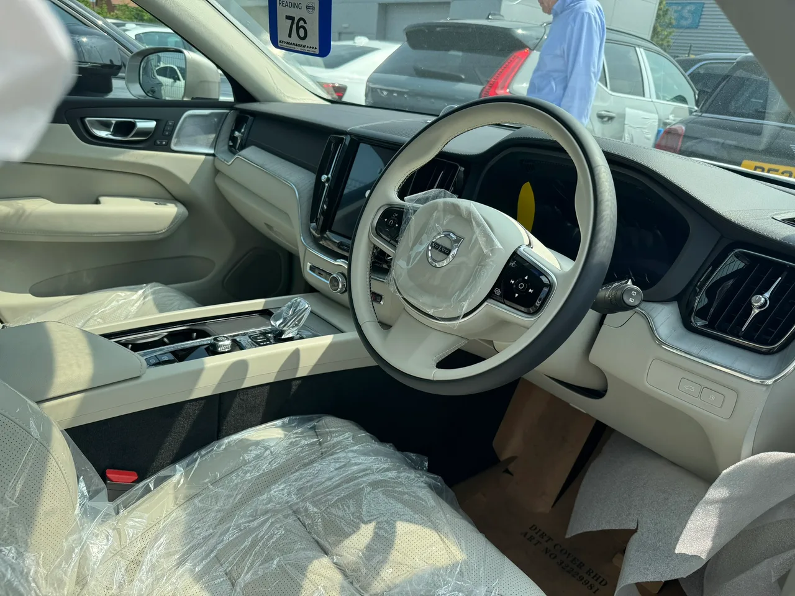

▲ 볼보 XC60 — 국내 중고 시장 총 등록 매물 537대 중, 2세대(2017년 이후) 매물의 약 28%인 140대가 2천만원대에 형성돼 있다
중형 프리미엄 SUV의 대표주자 볼보 XC60이 중고 시장에서 예사롭지 않은 가격대를 형성하고 있습니다. 국내 등록된 중고 매물은 총 537대, 이 중 2017년 이후 나온 2세대가 498대를 차지합니다. 주목할 부분은 3천만원 이하 매물이 178대에 달하고, 그중 2천만원대만 따로 떼어봐도 140대나 된다는 점입니다. 2세대 전체의 약 28%가 2천만원대라는 뜻입니다. 신차 가격이 6,090만원부터 시작하는 차인 만큼, 이 정도 감가폭은 소비자 입장에서 눈여겨볼 만합니다.
1. 2천만원대, 140대의 정체
가장 저렴한 매물은 2018년식 T6 인스크립션으로 1,799만원, 주행거리는 18만7천km입니다. 2020년식 T8 인스크립션도 2,280만원에 거래되는데, 이쪽은 주행거리가 18만6천km로 앞선 매물과 비슷하게 많습니다. 즉 2천만원대 매물의 상당수는 연식이 오래됐거나 주행거리가 상당히 누적된 차량이라는 공통점이 있습니다. 절대적인 숫자만 보고 '싸다'고 판단하기보다는, 왜 이 가격까지 내려왔는지를 먼저 따져봐야 하는 이유입니다.

▲ 볼보 XC60 2세대(2017년 이후) — 신차 가격은 6,090만~8,320만원이지만, 연식과 주행거리에 따라 감가폭이 크게 갈린다
2. 트림별로 뜯어보는 가격표
트림에 따라 가격 분포도 제각각입니다. 플러그인하이브리드 최상급인 T8은 2,280만원부터, 가솔린 T6는 1,799만원부터 매물이 형성돼 있습니다. 디젤 D5는 2019년식 기준 2,749만~2,790만원(주행거리 8만km)으로 상대적으로 주행거리가 짧은 편이고, 최근 도입된 B5 마일드하이브리드는 2021년식이 2,549만원(10만5천km)부터 3,990만원(2만9천km)까지 폭넓게 형성돼 있습니다. 같은 연식이라도 주행거리 차이에 따라 가격이 1,000만원 넘게 벌어지는 경우도 있어, 단순히 '몇 년식이냐'보다 '얼마나 탔느냐'가 실제 가격을 좌우하는 핵심 변수입니다.
| 연식·트림 | 주행거리 | 가격 |
|---|---|---|
| 2018 T6 인스크립션 | 18.7만km | 1,799만원 |
| 2020 T8 인스크립션 | 18.6만km | 2,280만원 |
| 2021 B5 인스크립션 | 10.5만km | 2,549만원 |
| 2019 D5 인스크립션 | 8만km | 2,749만~2,790만원 |
| 2019 T6 인스크립션 | 7만km | 3,350만원 |
| 2021 B5 인스크립션 | 2.9만km | 3,990만원 |
| 2024 B5 | - | 5,290만원 |
| 2025 B5 | - | 5천만원 후반 |

▲ 볼보 XC60 실내 — 상급 트림 특유의 고급 마감은 저가 매물에서도 대부분 유지되지만, 실제 구매 전에는 직접 착좌해 확인하는 게 좋다
3. 왜 이렇게까지 감가됐나
수입 프리미엄 SUV 특유의 큰 감가폭에 더해, 몇 가지 요인이 겹쳤습니다. 우선 디젤 모델(D5)에 대한 환경 규제 강화와 친환경차 선호 흐름이 디젤 트림의 수요를 낮췄습니다. 또한 XC60은 세대교체 없이 오래 판매된 모델인 만큼, 초기 연식 매물이 시장에 누적된 물량 자체가 많습니다. 여기에 수입차 특유의 부품비·공임 부담이 중고 구매 심리를 위축시키는 요인으로 작용하며, 감가가 가속화된 것으로 풀이됩니다. 다만 이런 요인들은 반대로 지금 저렴하게 구매하려는 소비자에게는 유리한 조건이기도 합니다.
4. 저가 매물의 함정 — 주행거리와 상태
2천만원대 매물의 상당수가 15만~19만km대의 높은 주행거리를 가진 차량이라는 점은 반드시 짚어야 할 대목입니다. 수입차는 국산차보다 소모품 교체 주기의 부품비가 비싸고, 고주행거리 차량일수록 서스펜션·전장 부품 등 고비용 수리가 필요한 경우가 늘어납니다. 저렴한 가격에 혹해 계약하기 전에, 정비 이력과 주요 소모품 교체 여부를 꼼꼼히 확인하는 절차가 특히 이런 고주행거리 매물에서는 필수입니다.

▲ 중고차 매매단지 — 고주행거리 저가 매물일수록 정비 이력과 소모품 교체 여부를 꼼꼼히 확인해야 한다
5. 최신 연식은 다르다 — 5천만원대 매물의 존재
모든 XC60이 저렴한 것은 아닙니다. 2024년식 B5는 5,290만원, 2025년식은 5천만원 후반대에 거래되고 있어 신차 가격과의 차이가 크지 않습니다. 결국 XC60 중고 시장은 '연식·주행거리에 따라 극단적으로 갈리는 이원화 구조'라고 볼 수 있습니다. 예산이 넉넉하지 않다면 2천만원대 고주행거리 매물이 대안이 될 수 있지만, 상태 좋은 차를 원한다면 최신 연식은 여전히 신차 대비 큰 폭의 할인을 기대하기 어렵다는 점을 감안해야 합니다.